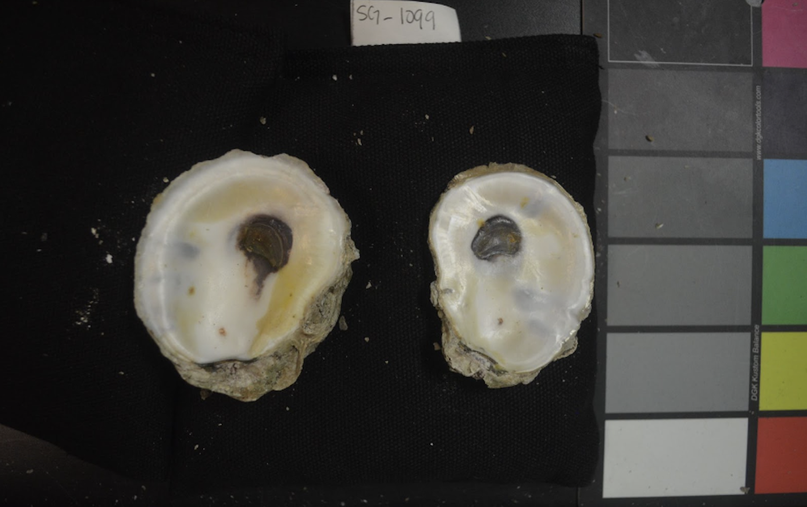
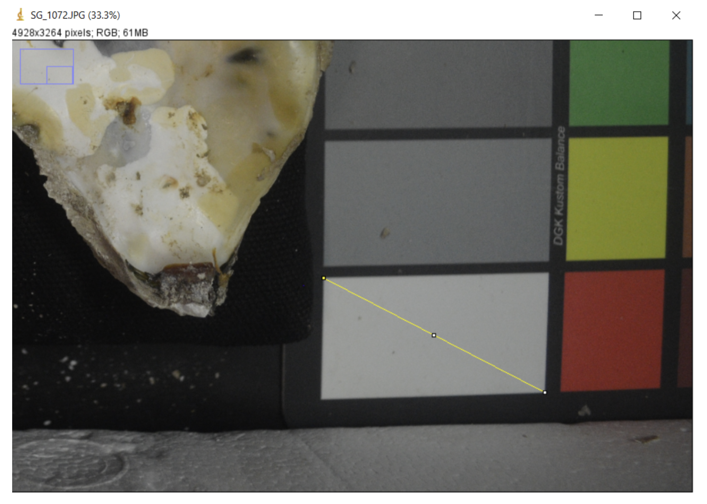
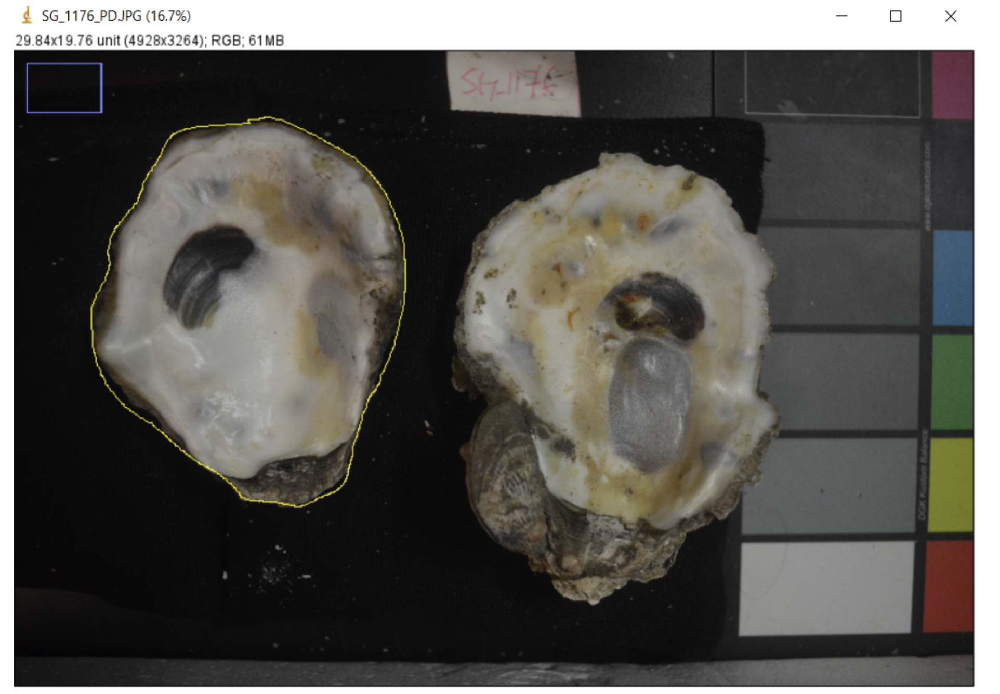
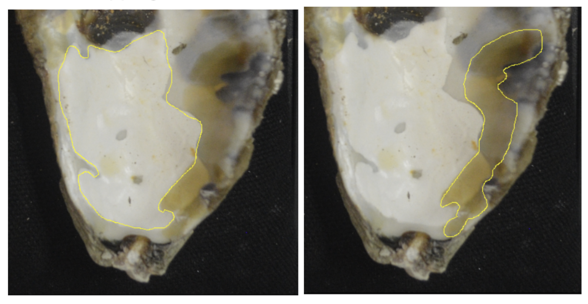
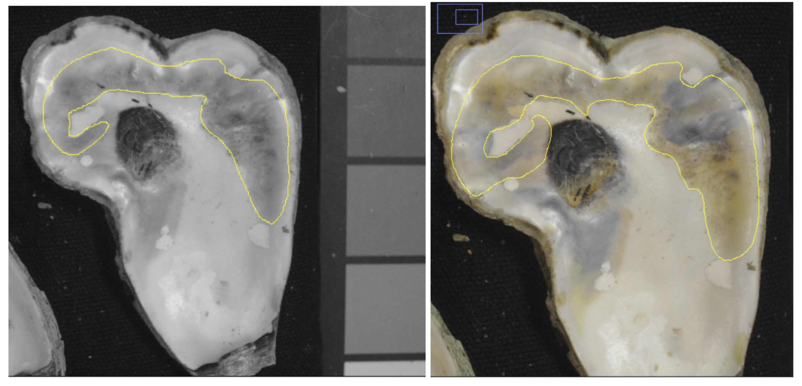
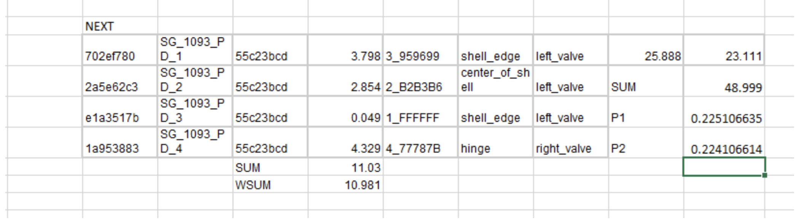
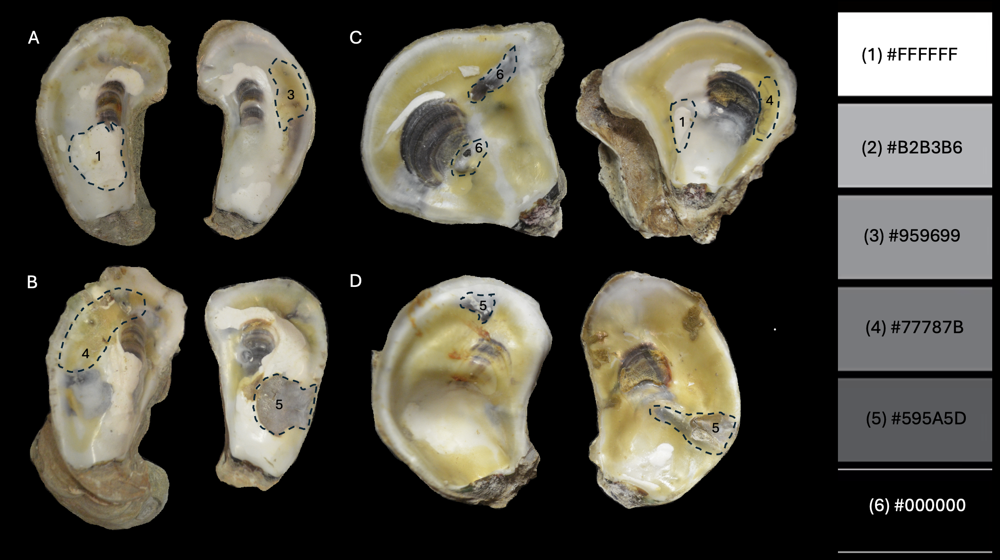

ImageJ & Mapping Oyster Shells
Equipment
DSLR camera or digital camera. An phone camera may work if it focuses on very close objects.
Camera stand or tripod that allows the camera lens to point directly down
Level table in a room with consistent, bright, indoor lighting. No natural light is ideal.
3-4 black beanbags, ideally with sand or small particles
Color scale swatch card with grey scale
An object of known invariable length (we use the length of a square in our color scale swatch card)
A computer to run the freely-available ImageJ software
A spreadsheet or app to collect data in
Taking high-quality images
The first step in the protocol is to take high-quality images of each shell. We photograph both valves together in one image. We also include a label with the ID number of the individual in the image for easy reference and a color scale card to ensure the color balance is consistent across images.
It’s crucial that all images of your study organism are taken at the same scale and are level. Any differences in the height of the object to the camera will translate into measurement differences in ImageJ. For this reason, use a level surface and do not vary the height of the tripod and camera. Keep all objects in the frame consistent in their distance to the camera lens across all images.
Tips: If possible, do not move the tripod setup until all imaging is complete. If needed, use a prop (e.g. beanbags) to support each object on a level plane. Do not change the height of the supportive materials - for example, do not vary the number of beanbags stacked under each object.
Photograph Protocol
Attach camera to tripod setup. Focus the camera and take a trial image to test lighting.
Remove the oyster shells and ID tag from the bag. Ensure the ID tag matches the label on the bag. Clear any dust or particles off of the inner shells.
Stabilize the shells on top of black beanbags to ensure they sit parallel to the table and about ~5-6 inches below the camera lens.
Focus the camera and take a few images with both shells, ID tag, and the color swatch in the frame. Make small adjustments in between images if necessary to ensure there is no glare on the shells.

Data Collection and ImageJ Protocol
- Upload the images from the camera into a folder on the computer that will use the ImageJ software. Label the folder based on the
ID_Site_Datepopulation info. Name each of the images a unique name. We use SG_XXXX_PD to stand for seascape genomics, individual ID number, and Polydora.
We collected our data using an app designed with AppSheet and linked to two Google Sheets - one for whole oyster shell measurements, and one for individual blister measurements. From this point on, if you are not using an app, record your data in whichever spreadsheet(s) you are collecting measurements in, we will refer to “app” as the data collection location.
Upload the full color image of each individual into the app under the
Image_valves_full_colorfield.Input
TRUEorFALSEfor Infection_status based on the individual. If there is at least one blister, the infection status is TRUE.Upload the full color image to ImageJ twice.
Convert one of the images to 8-bit grey scale by selecting
Image->Type->8-bitin ImageJ for color comparison.Set the measurement scale in ImageJ by using the linear selection tool to draw a diagonal line across a square on the color swatch. This is our scale object of known invariable length. Select
Analyze -> Set scaleand add the length of the diagonal line in theKnown Distancetext box and the unit in theUnit of Lengthtext box.

- Measure the area of each shell. Use the free draw selection tool to select the entire area of each value with the stylus, then press “m” on your keyboard to get the area. Enter the data from the pop up measurement window into the app.

Leave the
Blister_count,Total_area_infected, andTotal_area_infected_current_blisters_onlyfields blank (for now), save the data, and open the blister data field in the app.Fill in the
polydora_blistersLabelfield with SG_XXXX_PD_n, with n being the count of the blister that you are processing.Measure the area of the blister. Use the free draw selection tool to draw around the perimeter of the blister then press “m” on your keyboard to get the area. Enter the area into the app.
Abiotic or biotic environmental stress on oysters may reduce the ability of the oyster to secrete new layers of shell to recover from infestation. It has been hypothesized in the literature that as oysters secrete new layers of shell over blisters, the color of the blister becomes lighter Dorgan et al 2021. Due to this hypothesized dynamic, we have a specific protocol for collecting data from overlapping blisters.
If a white blister and a yellow blister are overlapping, record the area of the entire yellow blister, and crop the area of the white blister to record only the part that does not have overlapping blisters. We collect data this way in order to (1) avoid collecting the same blistered area twice, and (2) accurately estimate the extent of recent/current infections. Assuming that opaque white blisters indicate shell repair over fully healed blisters, yellowed and dark spots are current blisters that are not yet covered with shell repair.
 This image shows the correct way to collect area data from overlapping blisters. The yellow blister area is calculated in its entirety, the white area is cropped, and we avoid collecting the area of overlapping blisters twice.
In the case of a large, complex blister that has multiple colors, it would take a lot of time to collect data on each small section of it. Instead, view the image in 8-bit grey scale. If they are the same hex code designation in the 8-bit photo, you can count it as one large blister.
 This image shows how a complex large blister with multiple colors (yellow, black, brown) is the same shade in grey scale. We count this blister as one occurrence and collect area and hex code data accordingly.
Using the 8-bit photo, record which hex code and number (1-6) is closest to the blister color in
Blister_hex_codeapp field. We determine best hex code match by eye, with the grey scale hex color palette open on the computer screen next to the 8-bit image.Record
Blister_locationbased on the position in the shell (hinge, center, edge). Record theBlister_valvewhich specifies if the blister was on the left or right valve in the image.After completing steps 13-16 for all of the blisters on both shells, go back into the main spreadsheet (related polydoras) to update the
Blister_countwith the count of total count of blisters processed across both valves.
Data Analysis Protocol
To calculate the
Total_area_infected, reference thepolydora_blisterstab on theSeascapeSamplesspreadsheet. Copy all of the data from the individual just processed and paste into a running excel sheet. Reference thepolydoratab on theSeascapeSamplesspreadsheet and copy the individuals data into the excel sheet. Highlight all of the blister area values for the individual and record the sum value. Divide the sum value by the total area of the individual (both valves added together). Add this value to the app underTotal_area_infected.To calculate the
Total_area_infected_current_blisters_only, highlight all of the blisters except the1-FFFFFFcolored blisters and record the sum value. Divide the sum value by the total area of the individual (both valves added together). Add this value to the app underTotal_area_infected_current_blisters_only.
In this running excel sheet setup, the NEXT line indicates the start point for data from a new individual. The data from each blister is listed in rows. Below the data, WSUM equals the sum without white blisters (removing any 1-FFFFFF hex code areas). To the right of the data, P1/P2 stands for percentage 1, the percent area of all blisters on the shell, and percentage 2, the percent area of only current blisters on the shell.

Editing in ImageJ for Publication
Optionally, you can use features in ImageJ to prepare publication-quality images. We used the freehand selection tool to select each oyster valve, and then removed everything in the background with Edit -> Clear Outside.
Then, we transferred images to powerpoint and used freehand markup tools to create publication-quality composite images like this one!
